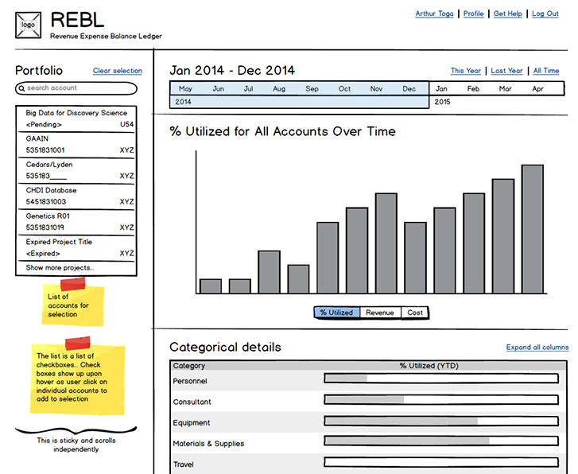
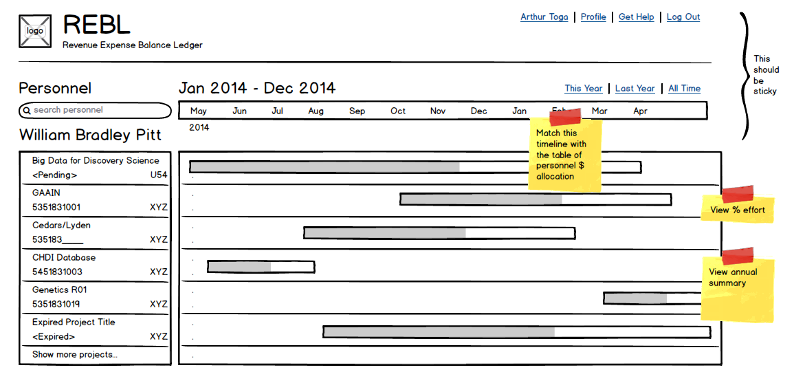
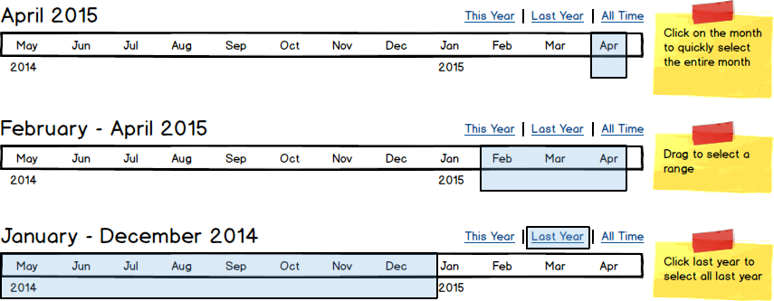
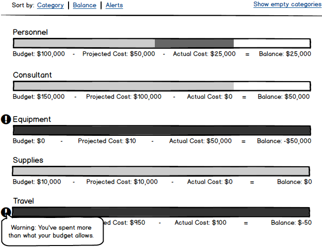
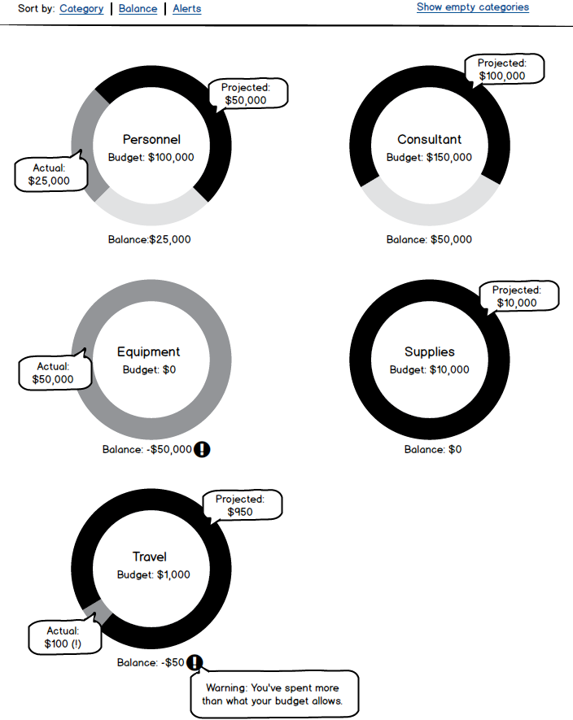
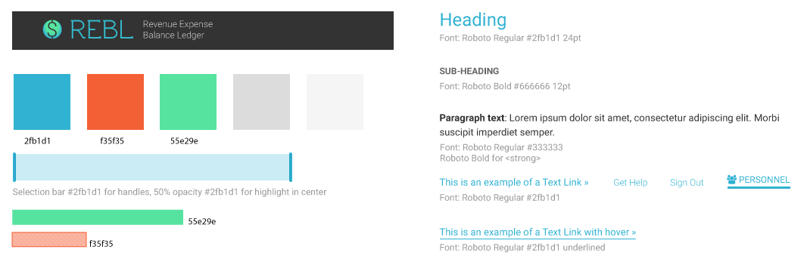
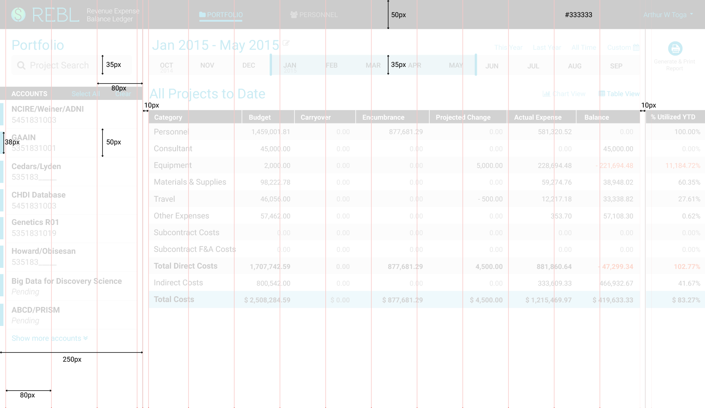
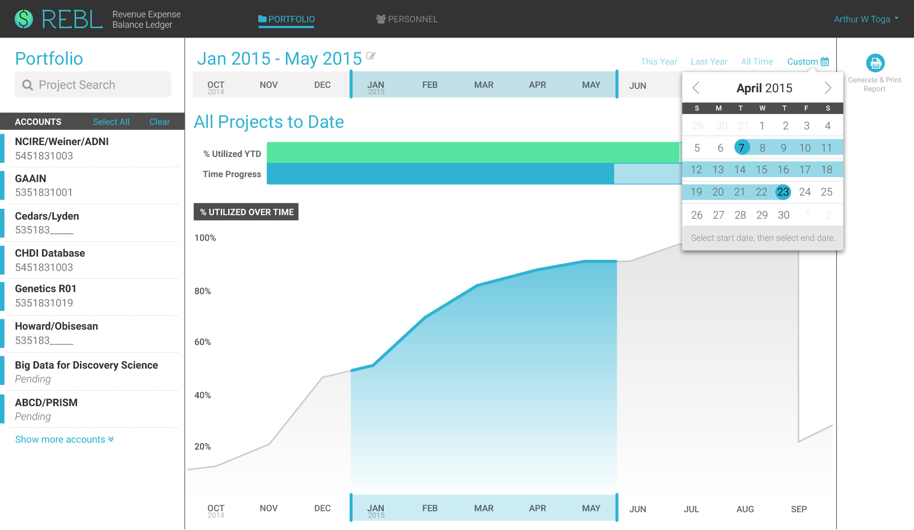
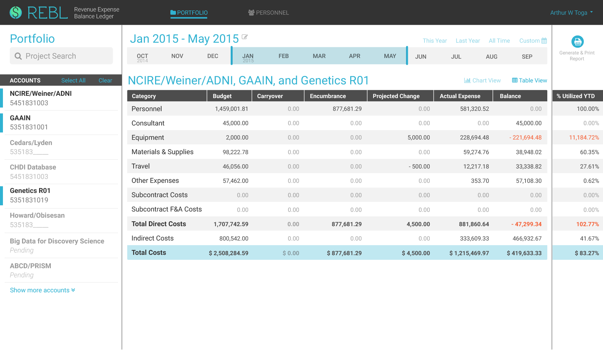
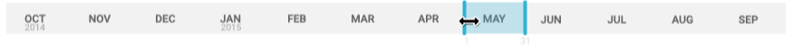

Summary
REBL is a financial dashboard web application, designed to give dynamic and visual reports for a wide range of users and groups. The application will be implemented both in and outside of the Institute of Neuroimaging and Informatics.
Working with a project manager and a developer, as the sole designer, I was tasked with designing the user experience, dashboard interface, and data visualization.
The problem
Principal investigators, project managers, and fund managers required a unified financial system that can generate customized reports. Traditional spreadsheet documents can be cumbersome and static. The busy user wants the ability to both view an "at-a-glance" summary and access detailed numerical data. Administrative users also need to be alerted for accounting errors as they occur.
User research
I met with several stakeholders and was able to identify requirements unique to each user type. Examples:
Principal investigators
- View budget, cost, and balance for
- Complete portfolio
- Individual accounts
- Filter data by time
- year-to-date
- all years
- fiscal year
- custom date range
- Review and allocate accounts for personnel payroll
- View and edit user profile and settings
Administrators
- Enter data in back-end
- Receive alerts for errors
- Budget planning
- Expense reconcile
- Generate detailed reports for auditing
- Create project, account, user
Wireframes
Not only did different essential components have to be present, they also had to be in a clean and functional layout. I started by blocking out labeled areas to represent each important component. This low-fidelity wireframe allowed me to move things around rapidly for pure layout purpose.
I then added pertinent content to reach a more detailed wireframe for discussion with stakeholders.
Portfolio Dashboard View
This view shows a complete detailed list of funding accounts in a user's portfolio.

Preliminary meetings led to additional iterations for different usage patterns, such as choosing time or viewing personnel data. When I created the personnel wireframe,
I realized I could (and should) utilize the same layout I used for the portfolio view, specifically for the timeline and account list. This made for a smoother experience switching between different views (portfolio vs. personnel).
Personnel Dashboard View
This view shows financial information (payroll and funding sources) for an individual personnel.

Preliminary patterns
These preliminary ideas for data visualization helped clarify expectations from stakeholders.

Timeline selection pattern

Bar chart pattern for data viz

Donut chart pattern for data viz
Style tile
Aiming for a simple and clean UI, I decided to limit the color palette to just 1 primary accent color, and 2 secondary colors to denote positive and negative information. Texture was applied as necessary to provide accessibility for color-blindness. All other content would be in different levels of gray.
I used a grid system for the design to achieve visual organization and hierarchy, and potential scalability. Ideally, units should be relative for responsiveness, but for the developer to quickly code for a demo, I provided absolute values instead.

Color mockups and iterations
During this stage, several iterative changes occurred as I met with users. New content was provided (and required), so the design changed adaptively. For example, the personnel dashboard evolved to be more complex over time, as users essentially asked for it to look like "an Excel table". To keep this simple, I faded out repeated elements ($ sign, same number each row, 0 values).
Version 4 above got closer to what we needed. However, it looked busy. A closer analysis showed that there were 7 distinct blocks (in red, bottom), and there was not enough contrast overall. This led to version 5, where the vertical blocks were reduced to just 3, and contrast was subtly increased:
Personnel Dashboard View
This screen shows the different contributing funding sources to an employee's payroll. Sometimes, an error can occur when new funds are pending and adding to the existing allocation for the employee (thus exceeding 100%).

Portfolio: Chart View + Custom Date
This screen gives an at-a-glance overview of the current active accounts in a user's portfolio and also allows for time frame selection via several input methods available here. The user can select specific accounts on the left column to visualize.

Portfolio: Table View + Selected Accounts
This screen gives more granular details for the different accounts in the user's portfolio. Errors are highlighted and flagged for review and revision. The user can toggle between this view and the Chart View.

Motion studies for timeline selection
To convey the design intent on how the timeline selection should work, I created a short animation clip using AfterEffects. It was important to show that specific dates appeared on the timeline to aid the user in selecting a custom date range.

Timeline selection in context
Interactive prototype
I created an interactive prototype with InvisionApp to test for usability, and to present at a faculty meeting. The demo received many positive stakeholders feedback that would help solidify the design and facilitate back-end development.
Conclusion
Insights from meetings with both prospective users and the developer at every step of the process (wireframes, color mockups, and interactive prototype) helped guide the design. It was important for me to present an interface that is familiar to users (e.g., spreadsheets) and also informative, dynamic with data visualization that fit within this interface. At the same time, from my experience with front-end development, I was cognizant of the programmatic constraints and timeline. This was reflected in the design, so the developer could achieve a feasible deliverable.